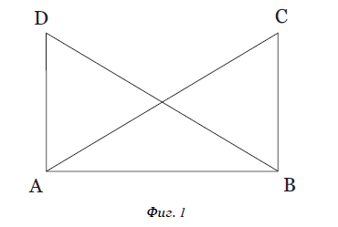

Беседа 1169 от 3877 · Беинса Дуно
Великите хора
Само светлият път на Мъдростта води към Истината.
(Чете се темата: „Отличителни качества на великите хора“.)
Като се говори за великите хора, ние дохождаме до техния произход и до пътя, по който са вървели. Ние се интересуваме от тях дотолкова, доколкото можем да следваме пътя им и да се ползваме от техните опитности. Важно е да се знае кой е бил първият тласък в човека да работи върху себе си и да стане велик. Първият тласък в човека за съзнателна работа се крие в мисълта. Мозъкът оформява човешката глава и определя границите, в които човек може да се движи. Като мислил дълго време, човек определил кръга на своята дейност в умствения свят. От този свят той слязъл в сърцето и образувал друг кръг – поле на дейността си в света на чувствата. Мислите представят формите на идеите, но форми без съдържание нищо не струват. За да ги осмисли, човек вложил в тях чувства, като съдържание на мислите. Следователно мозъкът е резултат на умствената дейност на великите хора. Белият дроб и сърцето са резултат на техните чувства. Между великите хора, както и между обикновените, се появило раздвояване: едните тръгнали наляво, другите – надясно. Първите били по-силни от вторите, поради което изместили сърцето наляво. В бъдеще, когато мислите и чувствата на човека се уравновесят по сила, сърцето ще бъде точно на средата, както е било първоначално, при създаването на първия човек. Най-после, великите хора постепенно слизали надолу, докато един ден стъпили на земята и създали стомаха – третият кръг на своята дейност, проявена на физическия свят. Стомахът е полето, в което човек усилено работи, за да придобие блага, чрез които да подслажда живота си. Значи като говорим за великите хора, ние имаме предвид това, което те са създали чрез мисълта, чувствата и стремежа си към хранене, към задоволяване нуждите на вкуса. На великите хора, именно, се дължи създаването на мозъка, белия дроб, сърцето и стомаха.
И тъй, първото нещо, което определя човека, е правата мисъл, която трябва да бъде строго определена, т.е. да отговаря на реалността. Реалността е тил на правата мисъл. Второто нещо, което се иска от човека, са правите чувства, които имат зад себе си поне една основна мисъл като тил. Преходните чувства нямат никакъв тил зад себе си. Тъй щото, човек може да бъде велик, когато мислите му имат за тил Божествени принципи, а чувствата му се поддържат от Божествени мисли. Първоначално, когато светът се е създавал, великите хора са взимали участие в създаването му. Те са били богове на небето. Като свършили работата си горе, те слезли на земята на по-низка служба – да я уредят. Щом завършат тази работа, те ще се качат на небето, като оставят на земята по няколко от своите представители. Като проследите живота на великите хора, виждате, че те са живели при големи ограничения, поради което не са могли да се проявят напълно. Те се проявили частично. Христос беше велик човек, но не можа да се прояви напълно, не му се даде възможност: биха Го, разпнаха Го и Го изпратиха на онзи свят. Христос носеше в себе си велико слово, светлина и мъдрост, знание и любов, но не можа напълно да се прояви. Днес постепенно се създават условия за проявяване на великите хора. Отсега нататък те ще слизат на земята, за да се проявят в своята пълнота и величие. И в сегашните времена слизат велики хора на земята, но малцина ги приемат с любов, още по-малцина ги познават. За да познаете кой човек е велик, вие трябва да имате отзивчиво сърце и будно съзнание. Който не е готов да познае великите хора, той минава край тях, както край обикновените, без да придобие нещо. Много естествено. Как може слепият да се ползва от светлината на слънцето? Срещнат ли човек, който има любов в себе си, великите хора веднага се отварят, пущат малко от светлината си и отново се затварят. Не беше ли същото и с Христа? Колко души Го познаха и приеха учението Му?
Като ученици на живота, вие се нуждаете от смирение. Да се смири човек, това значи да научи закона на смаляването. В една легенда се разправя как Буда приложил закона на смаляването. Един ден той си почивал в една градина, между цветята, и до него дошла астралната змия, обвила го и започнала да го души. За да се освободи от нея, той започнал да се смалява и се смалил толкова много, че се изхлузил от нейните гънки. Следователно, щом се намерите пред някаква мъчнотия, направете опит да се смалите, да станете като водата и въздуха, да прониквате и през най-малките отвърстия.
Кои са отличителните качества на светлината, на въздуха, на водата и на земята? Кое е отличителното качество на въглерода? – Твърдостта. Най-съвършената форма на въглерода е диамантът, който се отличава с твърдост и лъчепречупване. Кое е отличителното качество на водорода? – Неговата подвижност и способност да прониква и през най-малките шупли. Достатъчно е да отворите съда, в който е бил водородът, за да изпълни цялото пространство. Той е общителен, с всички става приятел. Турците имат една поговорка: „Не ставай приятел със седем крале“. Значи между седем крале не може да има разбирателство. Те не се разбират, а вие ще ставате приятел с всички. Бъдете твърди и устойчиви като диаманта. Щом се натъкнете на някаква мъчнотия, одерете кожата ѝ, както на змията. Ако в сърцето ви влезе едно желание, което има характера на змията, не се оставяйте то да ви души, но вземете диаманта, който носите в себе си, направете един разрез около врата на това желание и одерете кожата му. То веднага ще се укроти, ще се смири и втори път няма да чуете гласа му. Кое е отличителното качество на азота? Той е недеятелен газ, мъчно влиза в съединение с другите елементи. С други думи казано: Азотът не е общителен, не прави връзки с хората, не мисли за любовни работи, за дом, за семейство. Той е идеалист, остава верен на един принцип – на огъня. Щом се повиши температурата, той влиза вече в съединение и с други елементи. Както водородът, така и азотът се съединяват с кислорода, като един крайно активен елемент, и образуват нови вещества. Когато намислите да правите зло, мислете за азота, който образува неустойчиви съединения. Ето защо, влезете ли в съюз със злото, бързайте да развалите този съюз. Бъдете неустойчиви в съюза си със злото, а устойчиви в съюза с доброто. Всеки елемент има определено място в човешкия организъм. Запример, мястото на кислорода е в кръвта на човека; на азота – в мозъка, в нервната система; на водорода – в стомаха; на въглерода – в костите.

Представете си, че някой заема високо обществено положение – пръв министър в отечеството си. Като министър, той има много задължения, отговорности, с които не може да се справи. Той се движи в триизмерния свят на своите мисли и чувства, но не може да ги хармонизира. За да излезе от това трудно положение, той трябва да напусне своя пост, да приеме само една идея. Ако му предложите да си даде оставката, ще се огорчи. В такъв случай освобождаването му от трудния пост може да се наложи по друг начин – чрез заболяване. Тогава той непременно ще напусне поста си и ще има само една мисъл – да оздравее. По този начин той ще излезе от триизмерния свят и ще влезе в едноизмерния. Не чакайте това да става по насилствен начин, но изучавайте законите, сами да минавате от един свят в друг, да трансформирате състоянията си.
Ще кажете, че човек се понижава, когато държи само една мисъл в ума си. Зависи каква е мисълта. Ако дадете път на една Божествена мисъл в ума си и на едно Божествено чувство в сърцето си, вие туряте основа на своето величие. Работете съзнателно върху Божествените мисли и чувства и не мислете кога ще станете велики. Това е въпрос на времето. Божествените мисли и чувства могат да се проявяват всеки момент, но човек трябва да се освободи от дребнавостите в живота, които играят роля на паразити. Те изяждат възможностите и добрите условия за проявяване на Божественото Начало в човека.
Като ученици, вие трябва да работите върху сърцето си, да го храните с устойчиви чувства. Това се постига чрез Любовта. Само Любовта прави човешкото сърце устойчиво. За да придобиете Любовта, вие трябва да правите опити, да обичате хората. Кого трябва да обичаме? Да обичате онзи, който ви обича, това е естествено, то е в реда на нещата. Детето да обича майка си и майката да обича детето си, това е естествено. Христос казва: „Да възлюбиш ближния си, като себе си“. Той казва, че човек трябва да люби и враговете си, но как, не е казано. Значи това не е достояние на всички хора. Само великите хора могат да любят враговете си. Те имат метод, по който проявяват любов към враговете си. Който не е дошъл до този метод, трябва да прави опити, да си изработи свой специфичен метод. Защо трябва да любите враговете си? – За да станете велики. Като люби враговете си, човек е подобен на Бога, Който изпраща слънцето, дъжда и вятъра за добрите и за лошите. Когато раздава благата, Бог има предвид всички същества, малки и големи, добри и лоши. Няма по-велико нещо за човека от това, да люби враговете си и да е готов да прощава.
Разправят за един от българските писатели и общественици, че когато заминавал за онзи свят, поискал прошка от всички хора, които обиждал; същевременно той простил в себе си на всички, които някога са го обиждали. Велико нещо е да искаш прошка от онези, които си обиждал, но по-велико е да простиш на онези, които са те обиждали и причинявали пакости. Това е качество на великия човек. То не се постига изведнъж. Много трябва да работи човек върху себе си, за да го придобие. Направете опит, да работите поне една година върху това качество, да видите какво ще постигнете.
Беден човек дължал голяма сума на един богат и не могъл да му я върне. Богатият не искал да прости дълга на бедния и постоянно го безпокоял за парите. Един ден бедният се разхождал край брега на реката и видял, че някой се дави. Веднага той се хвърлил във водата, хванал давещия се за ръката и го извлякъл на брега. В него той узнал своя кредитор. От благодарност към бедния, който спасил живота му, богатият го прегърнал братски и му простил дълга.
Когато Христос казва да възлюбим враговете си, Той има предвид това положение, че през дългия земен живот на човека ще дойде ден, когато врагът му ще го извади от реката и ще спаси живота му. От вашия враг зависи да ви извади от водата или да ви остави да се удавите.
И тъй, мислете за великите хора, за идейните неща. Като мислите известно време върху идейното в живота, ще започнете постепенно да го прилагате. Мислете за Бога, Който повдига и облагородява човешкото сърце. Мислете и за великите хора, като образци на трудолюбие, постоянство, любов към знанието, истината и свободата.
Само светлият път на Мъдростта води към Истината.
Лекция от Учителя, държана на 11 септември 1927 г., София.